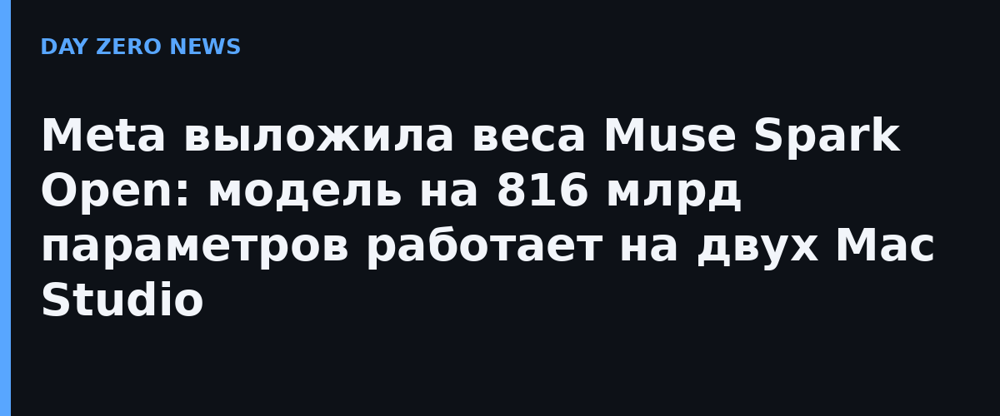

Meta выложила веса Muse Spark Open — модель, которую в компании называют самой способной открытой моделью американского производства на сегодня. Это нативно мультимодальная сеть: 816 млрд параметров всего, из них активны 42 млрд на каждый токен, окно контекста — миллион токенов. Профиль — программирование, агентные задачи и длинные многошаговые цепочки. Лицензия Muse Model License с ограниченными коммерческими условиями: многим разработчикам модель достаётся бесплатно.
Главная сенсация не размер, а место запуска. По заявлению Meta, Muse Spark Open — первая модель своего класса, которая работает на десктопе: два Mac Studio с чипами M5 Ultra под управлением новейшей версии MLX. Единая память Apple позволяет отдать графической подсистеме до 512 ГБ в каждой машине, а пропускная способность 1,2 ТБ/с успевает подгружать нужный срез весов на каждый токен. Итог: две коробки ведут себя как один суперкомпьютер с терабайтом общей памяти. Apple в собственном исследовательском посте подтвердила: при распределённом выводе через MLX и RDMA связка из четырёх Mac Studio выдаёт больше 36 токенов в секунду — быстрее, чем читает человек.
Руководители двух обычно конкурирующих компаний обмениваются комплиментами в X: Марк Цукерберг написал, что модель отлично работает на новых Mac Studio «благодаря совместной работе с Apple», а новый глава Apple Джон Тернус ответил: «Потрясающе — запускать модель такого калибра прямо с рабочего стола». Главный ИИ-офицер Meta Александр Ван в Axios добавил: «Мы рады, что мама и папа снова играют вместе». Компании сотрудничали несколько месяцев.
MLX умеет выводить модель из NVFP4-чекпойнта: хватает либо двух студий по 512 ГБ, либо четырёх по 256 ГБ с квантованной версией. Meta также отдаёт настраиваемые GPU-ядра Helion для SGLang — они ускоряют вычисления в 1,03–3,95 раза на видеокартах NVIDIA и AMD. В демонстрации агент Muse Code вносил настоящие правки в открытое iOS-приложение Ice Cubes — от исправления ошибок до полной сборки, — а ещё сам монтировал ролик в DaVinci Resolve, просматривая кадры покадрово.
Граница между дата-центром и рабочим столом истончается: открытые веса пограничного уровня теперь можно запускать приватно, у себя под рукой, — без облака и чужих серверов. Тем, кому облако всё же нужнее, модель уже доступна через Baseten, Fireworks, Groq, Modal, Nebius, OpenRouter и Together AI. Раньше на десктопах запускали урезанные версии больших моделей; теперь гонка переехала в другую плоскость — кто способнее, а не кто меньше.